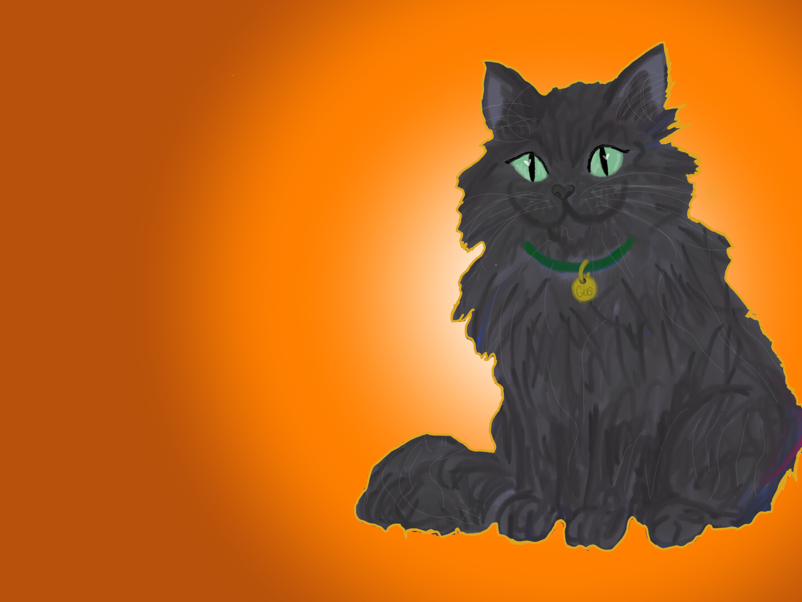
The Sparkliest Sweater
A story about friendship, confidence, and finding your sparkle.
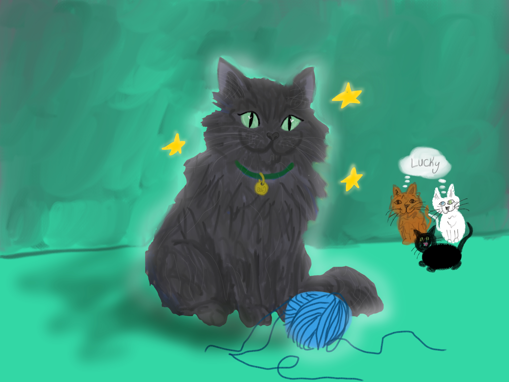
Meet Gus! Gus is known for his long, silver fur and the fluffiest tail around. He loves being admired, and he knows just how special his beautiful coat is.
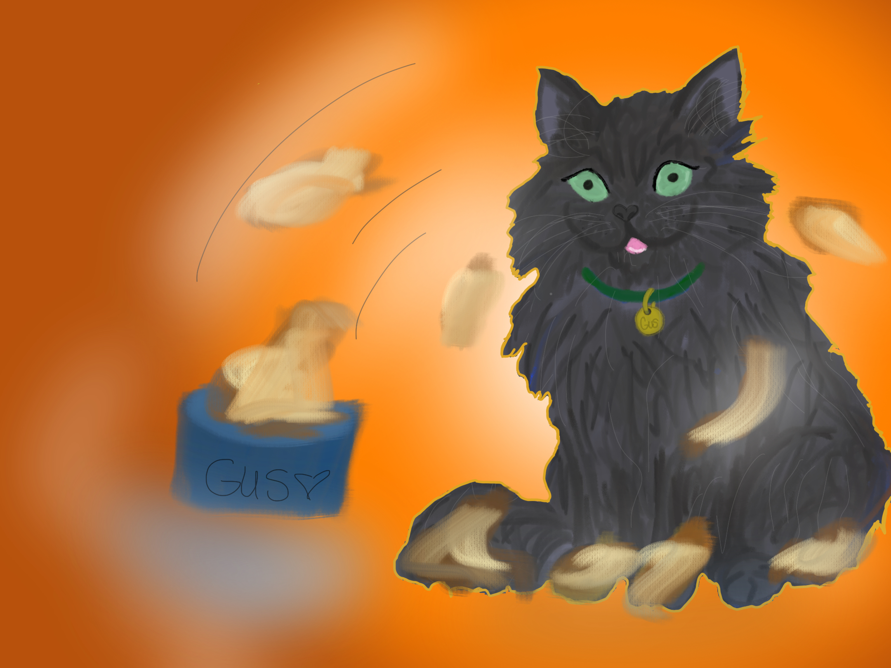
But one day, Gus accidentally sits right in a bowl of Friskies! The food gets everywhere, tangling into his long, fluffy fur.
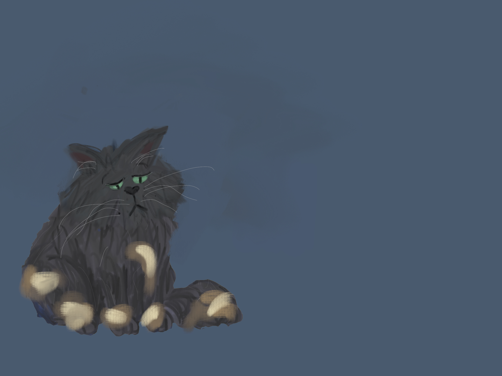
Gus feels sad and embarrassed. No matter how hard he tries, the mess is too tangled to brush out of his beautiful coat.
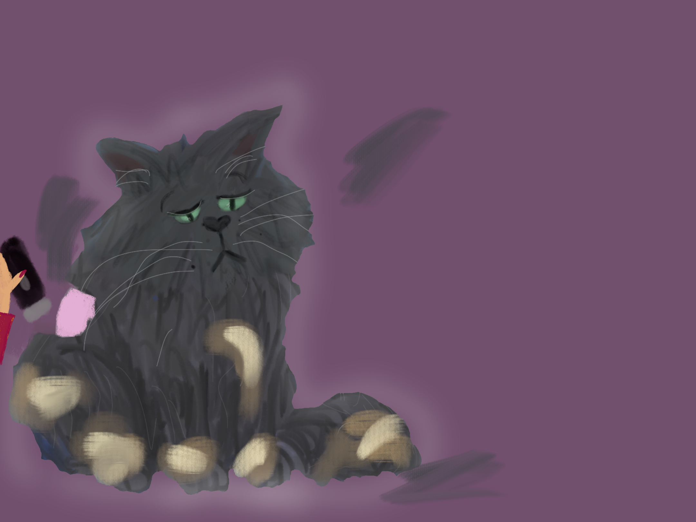
There is only one thing left to do. Gus has to go to the groomer, where he learns that his fluffy coat will have to be shaved.
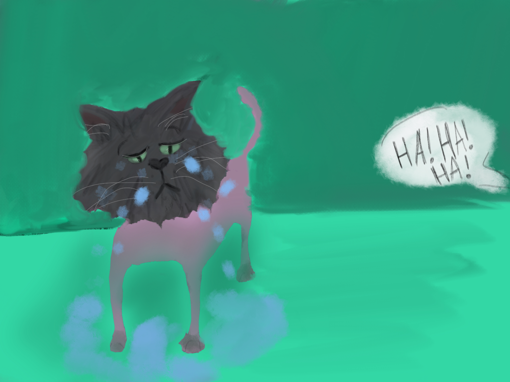
Little by little, Gus watches his famous fluffy fur disappear. Without it, he doesn't feel much like himself anymore.
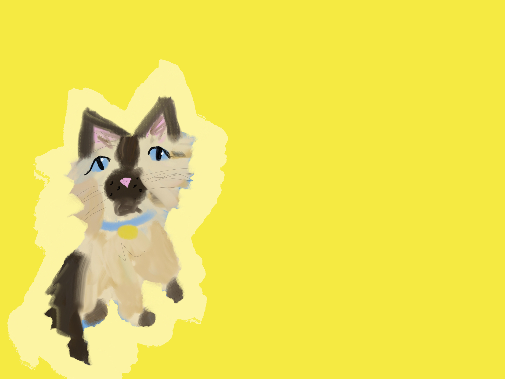
The other cats see Gus without his beautiful coat and begin to tease him. Gus tries not to care, but their laughter makes him feel even worse.
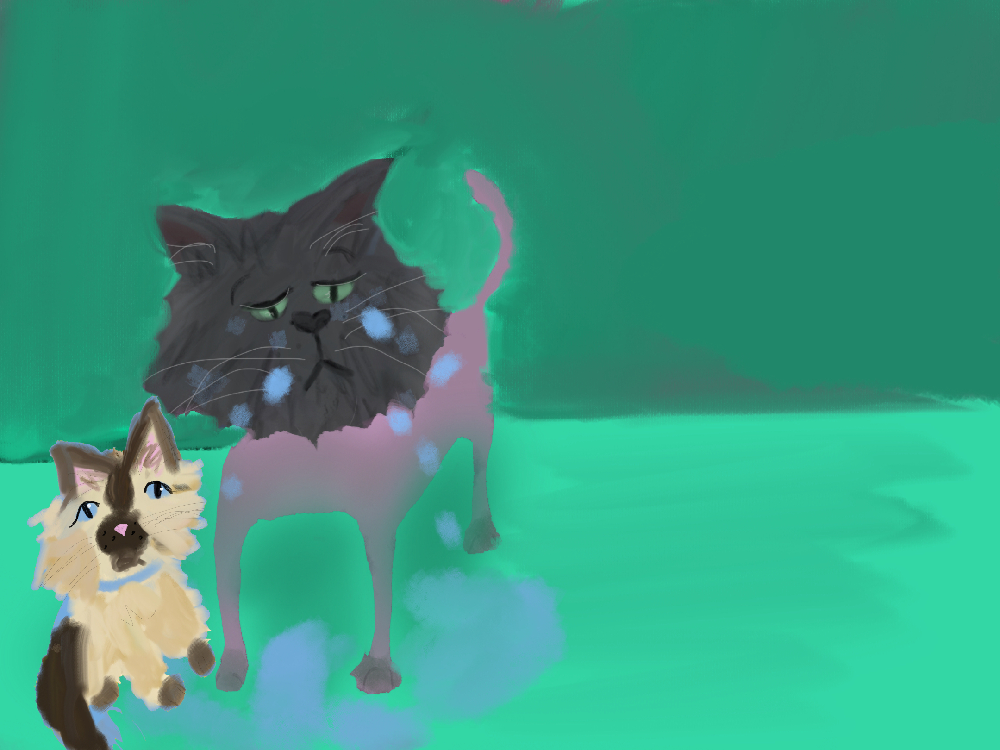
Then one day, Gus's owner comes home with a new kitten named Ralphie.
Ralphie instantly befriends Gus.
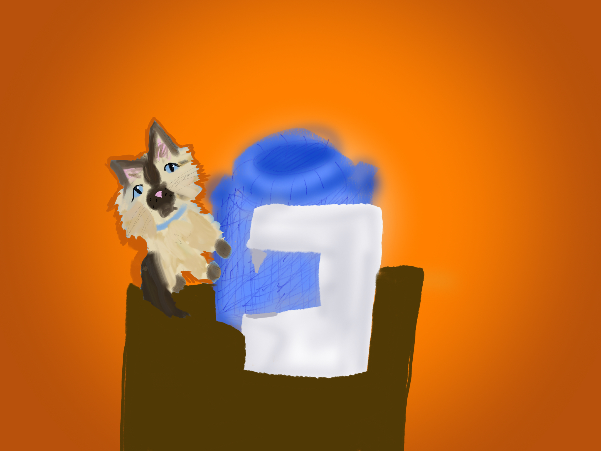
Gus tells Ralphie why he has been so sad. Ralphie listens carefully and decides he wants to do something special for his new friend.
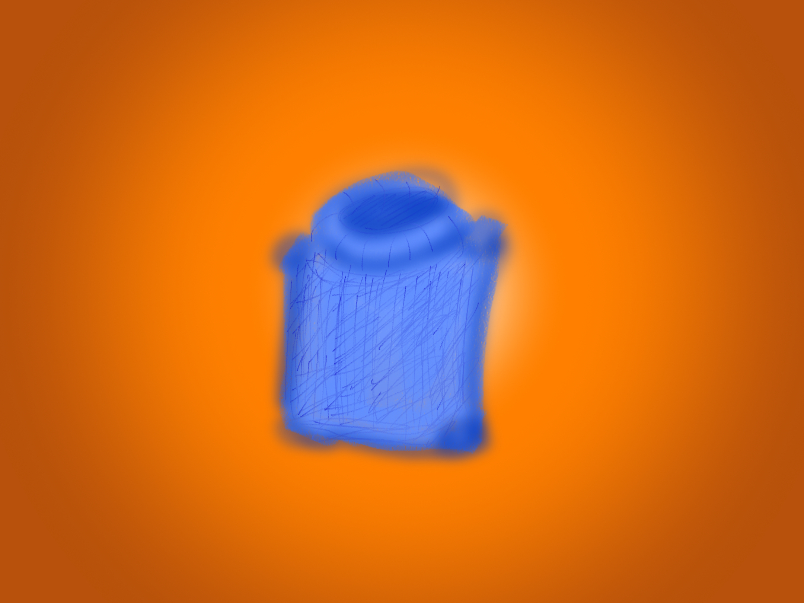
Later that night, Ralphie sneaks into the craft room. He gathers some fabric and gets to work on a surprise just for Gus.
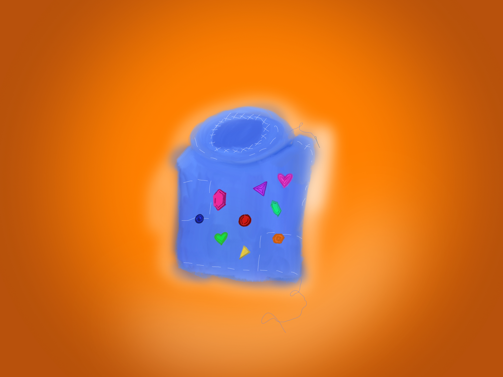
Ralphie carefully sews the fabric together until he has made Gus his very own sweater.
But something is missing...
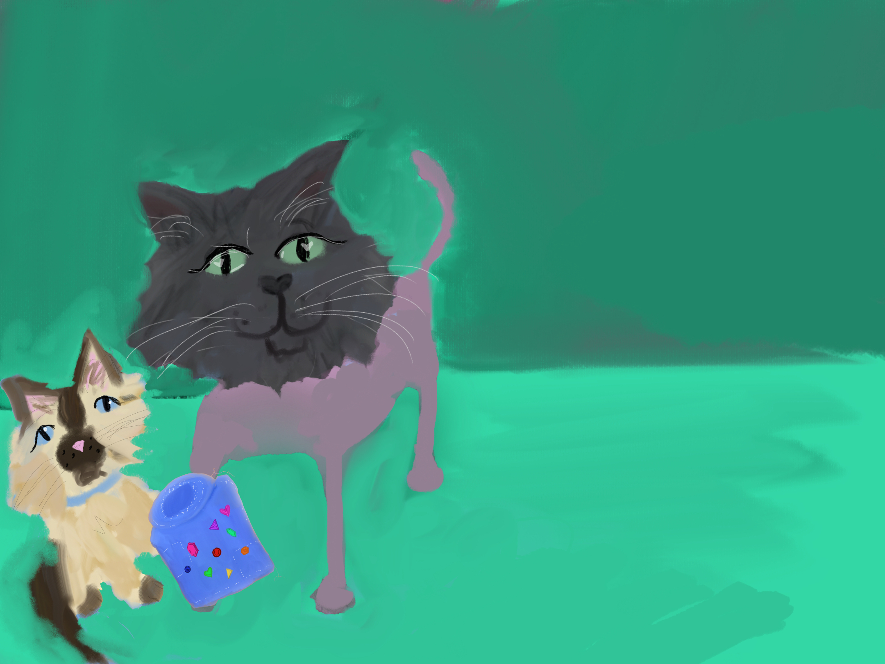
Ralphie knows Gus deserves something extra special. So he adds as much color and sparkle as he can.
Now it is perfect for Gus.
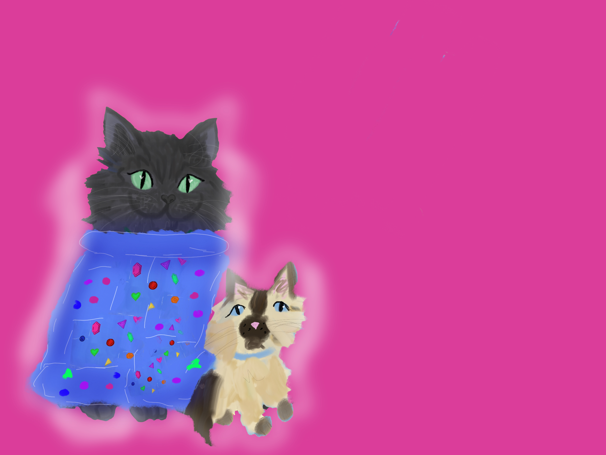
Ralphie gives Gus the sweater, and Gus loves it. For the first time since losing his fur, Gus finally feels special again.
Gus realizes that sometimes it takes a true friend to see your sparkle, even when you feel like you're not shining.